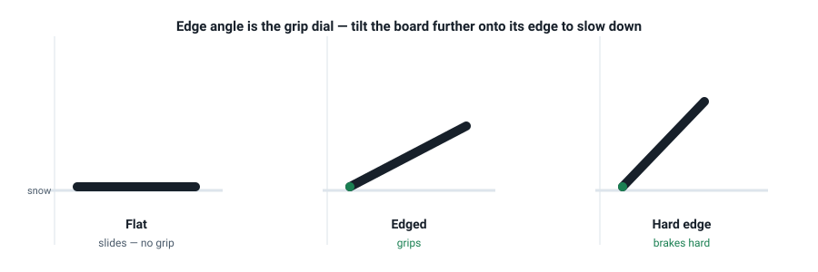

Edging & the Sideslip
Edging is the first dial you can actually feel. It decides whether the board slides or bites — which is to say, it is your brake, your grip, and half of every turn. You already sideslip a bit; this lesson turns that into deliberate control.
The two edges, one dial
Your board has a metal edge along each side: the heel edge under your heels, the toe edge under your toes. Tilting the board onto an edge is edging. The angle between the board and the snow is the edge angle, and it maps directly onto grip:
- Flat board, low edge angle → it slides.
- Board further onto its edge → it grips.
- Board hard on edge → it brakes.

The sideslip: sliding sideways in control
A sideslip is sliding straight down the fall line with the board across the slope, held on one edge. It is the foundation of everything: it is how you slow down, how you descend a pitch that is too steep to turn on, and how you learn to feel edge angle.
- Heel-side sideslip. Face downhill, board across the slope, weight on your heels, back straight, hands out front. Push your toes down gently to speed up; dig your heels to slow.
- Toe-side sideslip. Face uphill, weight on the balls of your feet, shins pressed against the front of your boots. The same rule applies: less edge = more speed, more edge = brake.
The official progression teaches both, then uses them as the base for turns (AASI Beginner's Guide, Part 3). Being able to hold both edges is non-negotiable — riders who only ever use their heel edge become what instructors call "heel-side heroes", and they never progress.
Getting back up
You will fall. Get good at getting up so it costs you nothing:
- From your heels: sit up, bend your knees, pull the board toward your backside, lean forward over your front foot and push up through your legs.
- From your toes: roll onto your front, dig in your toe edge, and push up to standing on your toes.
Catching an edge — the one danger to understand
Catching an edge is when the uphill edge of the board digs into the snow while you are travelling sideways, and the board slams to a stop under you. It happens when the board goes flat at the wrong moment. The fix is a habit you will build in Lesson 5: keep the board on one edge or the other, and cross from one to the other deliberately — never let it sit flat while you're sliding sideways.
- Static heel-side sideslip. Board across the slope, weight centred. Hold a slow, steady slide straight down, stopping and starting with heel pressure. Do it until it's boring.
- Gas-pedal drill. In that sideslip, deliberately go slow (high edge) → fast (low edge) → slow again, three times, on the same run. Feel the edge angle doing the work.
- Switch to the toe edge. Flip (or stand up), then repeat both drills on the toe side. Most people find toe side stranger; that is normal and exactly why you practise it.
- Stop-and-hold. Slide, then stop dead and hold still for three seconds without creeping. This proves you own the edge, not the other way round.
Check your understanding
1. On a heel-side sideslip, which way are you facing?
Heel side means facing downhill, weight on your heels. Toe side flips you to face uphill. Both are just ways to slide straight down on one edge.
2. To slow down during a sideslip, you…
More edge angle = more grip = slower. "Low for go, high for slow." It's the same dial you'll use to control speed in every turn later.
3. Catching an edge happens when the board…
The dangerous moment is when the board is flat and travelling sideways: the uphill edge can dig in and stop you dead. Keep one edge engaged at all times.
4. A rider who only ever sideslips on one edge will…
Turning requires both edges. Stick to one and you become a "heel-side hero" — you can get down, but you can't turn, and you'll plateau hard.
Watch it, don't just read it
- How to Snowboard: A Beginner's Guide — Part 3 PSIA-AASI · heel-side and toe-side sideslip, demonstrated by the official body.
- Sideslip & Falling Leaf Progresspedia · a clear written walkthrough with the exact body positions for both edges.
- Snowboard Pro Camp Ex-Whistler instructor · alternative explanations of edge control if it isn't clicking.

Watch the AASI/PSIA Beginner's Guide to Snowboarding, Part 3 (YouTube), for the sideslip and speed control from the official body. For a written walkthrough of both edges, the Progresspedia Sideslip & Falling Leaf page is unusually good.
Your teacher is right here
Is your toe-side sideslip fighting you? Not sure whether you caught an edge or just lost balance? Tell me what happened and I'll help you tell the difference — it matters for Lesson 5.
Snowboarding Fundamentals · lessons/0003-edging-and-sideslip.html